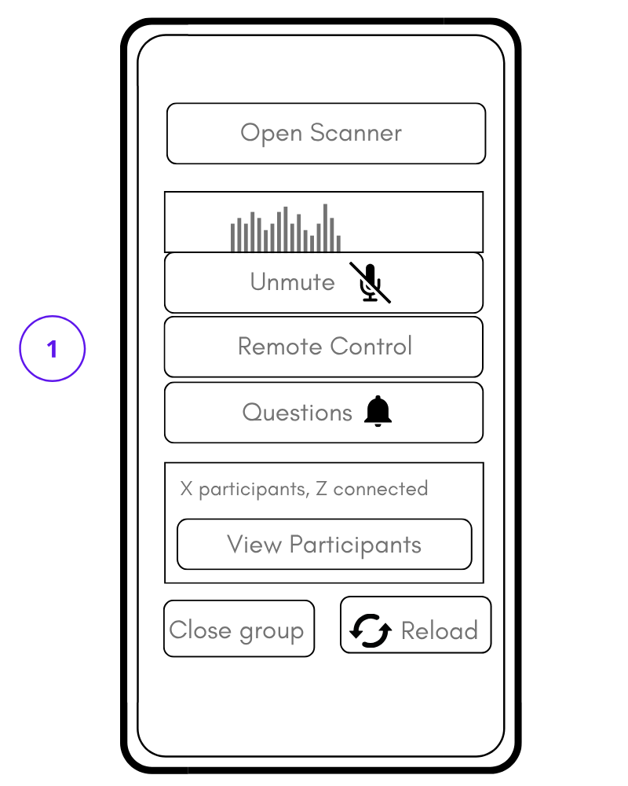
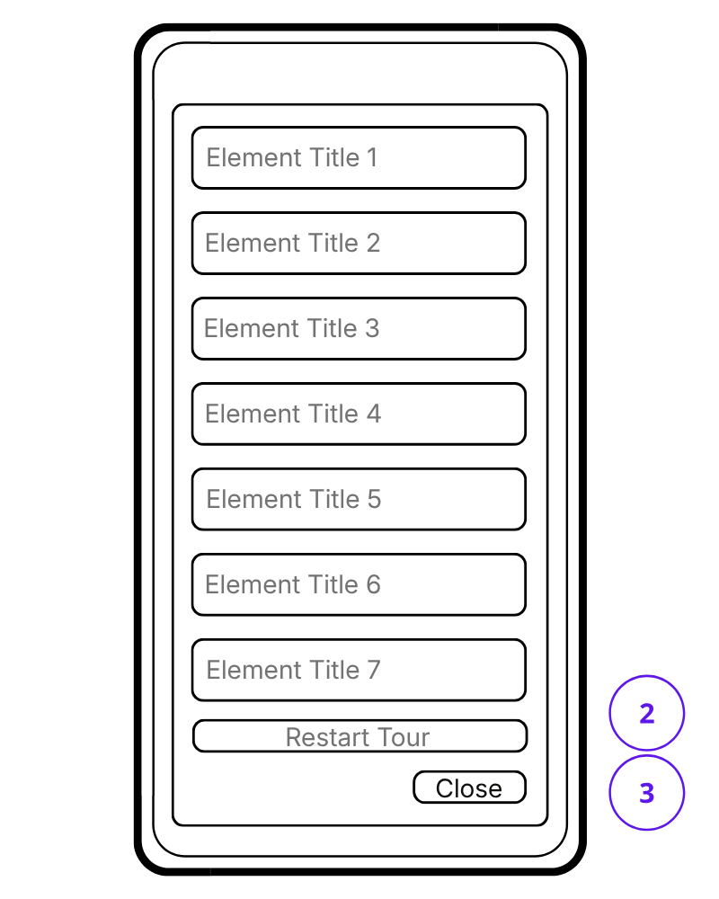
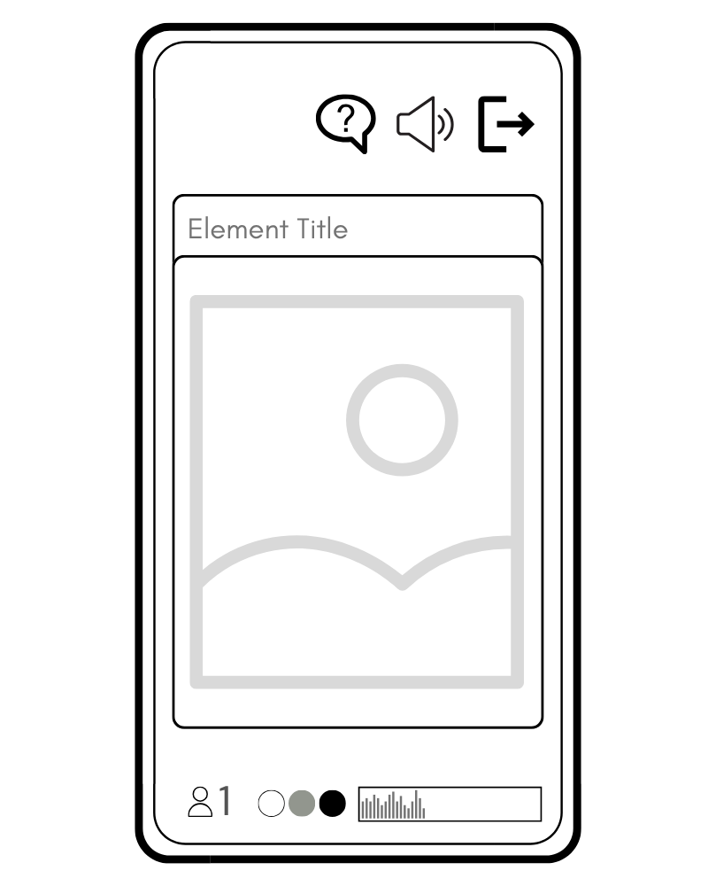
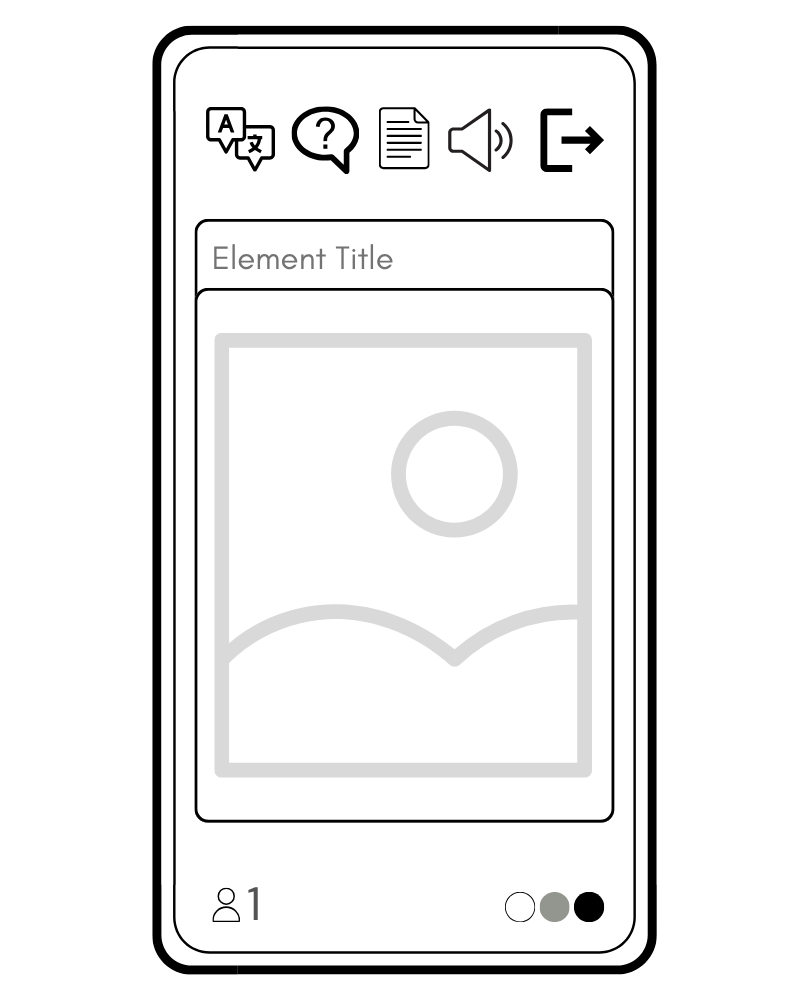

Nubart Live - Istruzioni per la guida
Prima di iniziare (1 minuto)
Prima che il gruppo arrivi, assicurati di avere queste due cose pronte sul tuo telefono
- Questo link: www.nub.art/customer/login
- I tuoi dati di accesso
- Consigliato: un microfono USB, soprattutto se pensi di usare il plugin di traduzione. Prova a trovare un microfono unidirezionale, soprattutto se guidi la visita in un ambiente rumoroso.
Passaggio 1: accedi e apri il gruppo
- Apri il link e accedi.
- Una volta dentro, clicca su "Apri gruppo".
Passaggio 2: distribuisci le carte
Assicurati che ogni partecipante abbia una carta.
Ora chiedi al gruppo di:
- Scansiona il codice QR della tua tessera con il tuo smartphone.
Se qualcuno non sa come scansionare un codice QR, non preoccuparti:
- Chiedi loro di andare su nub.art
- Usa lo scanner integrato che troverai lì
- Puoi anche inserire il codice stampato sulla tessera.
Passaggio 3: scansiona le carte (la tua parte)
Ora tocca a te:
- Clicca su "Apri scanner" (1) sul tuo schermo.
- Scansiona il codice QR di ogni partecipante.
Suggerimento: se preferisci, puoi scansionare le carte prima di distribuirle.
Passaggio 4: controlla che tutti siano connessi
Clicca su "Visualizza partecipanti" (6). Vedrai un elenco:
- Ogni partecipante ha un numero.
- Accanto a ogni numero, vedrai un piccolo "semaforo".
Il semaforo verde vuol dire che è tutto ok.
Se qualcuno ha problemi di connessione, questo numero ti aiuterà a individuarlo.
Interfaccia guida (relatore)

Interfaccia partecipante (ascoltatore)

Passaggio 5: inizia a parlare
- Clicca su "Attiva audio" (3).
- Inizia a parlare al microfono.
Dovresti vedere del movimento nell'analizzatore di spettro (2).
Questo vuol dire semplicemente che la tua voce viene trasmessa.
Se vedi del movimento, tutto funziona bene.
Se non vedi alcun movimento:
- Assicurati che nessun'altra app sul tuo telefono stia usando il microfono.
Cosa possono fare i visitatori
Dì al gruppo:
- Puoi attivare o disattivare l'audio in qualsiasi momento usando il pulsante Disattiva audio / Attiva audio (9).
- Puoi chiedere qualcosa usando il pulsante con il simbolo della domanda (8).
Se qualcuno manda una domanda (8):
- Vedrai un puntino rosso sul pulsante (4). Cliccaci sopra per leggere la domanda.
Passaggio 6: Terminare la visita
Clicca su "Chiudi gruppo" (7).
Se pensi di fare un'altra visita con lo stesso gruppo in futuro, puoi lasciarlo aperto. Così non dovrai scansionare di nuovo tutte le tessere.
RISOLUZIONE DEI PROBLEMI
Se l'audio si interrompe o si perde la connessione:
- Clicca su "Ricarica" (8).
- Questa azione ricollegherà tutti i partecipanti. Non è necessario che scansionino nuovamente le tessere.
Se qualcuno chiude per sbaglio il browser:
- Dovrà solo scansionare di nuovo la sua scheda. Tutto qui.
Se qualcuno vede del movimento sul misuratore di spettro (2) ma non sente nulla:
- Chiedi loro di alzare il volume del telefono.
- Chiedigli di chiudere qualsiasi app che potrebbe riprodurre suoni.
Nubart LIVE – Componente aggiuntivo di traduzione in tempo reale con IA (opzionale)
Importante:
Queste istruzioni valgono solo se decidi di attivare il plugin di traduzione AI in tempo reale quando apri un gruppo.
Se non ci hai chiesto il plugin o se decidi di non attivarlo, Nubart LIVE funzionerà esattamente come descritto nelle istruzioni a pagina 1.
Passaggio A: attiva il componente aggiuntivo di traduzione
Quando apri un gruppo, ti verrà chiesto:
Vuoi abilitare la traduzione?
Clicca su Sì se vuoi offrire la traduzione in tempo reale. Tieni presente che si tratta di una funzione a pagamento e che viene fatturata in base al tempo di utilizzo.
Clicca su No se vuoi una navigazione normale senza traduzione.
Passaggio B: scegli la lingua in cui parlerai
Scegli la lingua in cui parlerai durante la visita. Potrai cambiarla se decidi di cambiare lingua durante la visita guidata.
Passaggio C: durante la visita (vista della guida)
Quando il componente aggiuntivo di traduzione è attivo, vedrai un quadrato sullo schermo con scritto:
- la lingua scelta (2)
- il tuo tempo di utilizzo della traduzione (3)
Informazioni sul timer di utilizzo
- Finché non sei in modalità silenziosa e stai parlando (1), il timer sarà in rosso e conterà il tempo
- Quando silenzi il microfono (1), il timer:
- diventa nero
- smette di contare
- Il timer si ferma anche quando chiudi il gruppo
Controllo della qualità audio: sotto l'indicatore di livello, vedrai un indicatore circolare che mostra la qualità audio (4).
- Verde = audio di buona qualità
- Giallo o rosso = audio non proprio ok
Se l'indicatore diventa giallo o rosso mentre parli:
- controlla di aver scelto la lingua che stai davvero usando
- Riduci il rumore di fondo
- avvicinati al microfono
Parla normalmente, senza alzare la voce. È meglio parlare con voce calma e ferma.
Interfaccia guida (relatore) con traduzione IA

Interfaccia partecipante (ascoltatore) con traduzione IA

Passaggio D: Disattiva e attiva l'audio
La funzione di silenziamento (3) (1) funziona esattamente come nella versione normale di Nubart LIVE:
- Quando silenzi, la traduzione si ferma
- Quando riattivi l'audio, la traduzione riprende
Passaggio E: cosa vedono i visitatori (vista del destinatario)
Se il plugin di traduzione è attivo, i visitatori riceveranno un messaggio che spiega che le tue parole saranno tradotte in XX.
(XX è la lingua del loro browser).
Verrà inoltre informato che può cambiare la lingua in qualsiasi momento utilizzando il menu nella parte superiore dello schermo.
Se scelgono la stessa lingua che parli tu, sentiranno direttamente la tua voce e vedranno la schermata standard di Nubart LIVE.
Se hanno scelto una lingua diversa da quella che parli, la maggior parte dello schermo mostrerà:
- Una traduzione testuale in tempo reale di quello che stai dicendo (9)
I visitatori possono anche:
- Cambia la lingua (5)
- Disattiva o attiva l'audio (7)
Sicurezza finale
Non c'è bisogno di spiegare il sistema di traduzione ai tuoi visitatori.
Basta parlare normalmente.
Tutto il resto sarà intuitivo.
Nubart LIVE – Libreria multimediale (opzionale)
Importante:
Queste istruzioni si applicano solo se abbiamo creato una libreria multimediale per la tua visita.
Se non è stata configurata una libreria multimediale, Nubart LIVE funzionerà esattamente come descritto nelle pagine precedenti.
Passaggio A: apri la libreria multimediale
- Clicca su «Remote Control» (1).
Si aprirà una finestra sul tuo schermo con tutti i contenuti disponibili.
Questa finestra è visibile solo a te.
Passaggio B: invia contenuti al gruppo
- Clicca sul contenuto che vuoi mostrare.
Il contenuto selezionato apparirà immediatamente sugli smartphone di tutti i partecipanti.
I partecipanti non devono fare nulla.
Puoi continuare a parlare mentre il contenuto viene visualizzato.
Se selezioni un altro contenuto, sostituirà quello precedente.
Colori dei pulsanti nella libreria multimediale:
- Verde: il contenuto non è ancora stato inviato
- Grigio: il contenuto è già stato inviato
- Rosso: il contenuto non è stato consegnato (ad esempio per problemi di connessione)
Se un pulsante diventa rosso, cliccaci di nuovo per inviare nuovamente il contenuto.
Per riportare tutti i pulsanti in verde, clicca su «Restart tour» (2) (opzionale).
Passaggio C: chiudi la libreria multimediale
- Clicca su «Close» (3).
Questo chiude la libreria multimediale sul tuo schermo.
Puoi riaprirla in qualsiasi momento cliccando su «Remote Control» (1).
Cosa vedono i partecipanti
- Il contenuto appare automaticamente sul loro schermo
- Non devono interagire in alcun modo
- Possono comunque attivare o disattivare l’audio e inviare domande come sempre
Sei tu a decidere cosa mostrare e quando.
Buono a sapersi
- Puoi usare la libreria multimediale in qualsiasi momento durante la visita
- Viene mostrato un solo contenuto alla volta
- La libreria multimediale viene preparata dal nostro team secondo le tue indicazioni
- Puoi avere una libreria diversa per ogni visita
Interfaccia guida con libreria multimediale

Interfaccia guida con finestra Remote Control aperta

Interfaccia partecipante con libreria multimediale

Interfaccia partecipante con libreria multimediale e traduzione IA

Nubart LIVE: consigli pratici e risoluzione dei problemi (opzionale)
Non è necessario leggere questa pagina. La maggior parte delle visite funziona perfettamente senza tenere conto di nulla di tutto ciò .
Comunque, i seguenti consigli ti aiuteranno a garantire un'esperienza fluida per te e il tuo gruppo.
Prima della visita (consigliato)
Prova il sistema almeno una volta.
Se puoi, prova Nubart LIVE un attimo prima della tua visita. Offriamo kit di prova gratis!
- Usa lo stesso smartphone che userai come guida
- Prova in condizioni simili a quelle della visita reale
- Consenti l'accesso al microfono quando il browser lo richiede
Provarlo un attimo prima di iniziare ti aiuterà a sentirti più sicuro.
Controlla la copertura mobile o la connessione Wi-Fi nella tua destinazione
A differenza dei tradizionali sistemi di audioguida, Nubart LIVE usa Internet.
- All'aperto, questo di solito significa usare i dati mobili
- La copertura può variare all'interno di una città
Se la connessione si interrompe durante la visita:
- Basta spostarsi di qualche metro con il tuo gruppo
- La connessione si ripristinerà automaticamente quando tornerà la copertura
Usa uno smartphone moderno come guida
Per i partecipanti, qualsiasi smartphone funzionerà bene, anche i modelli più vecchi.
Tuttavia, lo smartphone della guida deve svolgere molte funzioni:
- Elaborazione audio
- trasmissione in diretta
- traduzione in diretta (opzionale)
Per ottenere i migliori risultati:
- Usa uno smartphone abbastanza recente con un buon processore.
- Assicurati che la batteria sia ben carica prima di iniziare la visita.
Configurazione audio in condizioni reali di visita
Se puoi, usa un microfono esterno
Gli ambienti urbani o le fabbriche sono spesso ambienti rumorosi.
Nubart LIVE funziona anche con il microfono integrato del telefono, ma:
- Le cuffie o un microfono esterno migliorano la qualità del suono.
- Se puoi, usa un microfono unidirezionale, non omnidirezionale: questo aiuta a isolare la tua voce dai rumori di fondo
Evita il feedback audio se usi il plugin di traduzione
Il sistema di traduzione è molto sensibile (ed è un bene che lo sia).
Per questo motivo:
- Il tuo microfono non dovrebbe captare altre voci oltre alla tua.
- Il suono tradotto dai dispositivi vicini non dovrebbe essere udibile dal tuo microfono.
In pratica:
- I visitatori devono usare le cuffie o
- mantenere una certa distanza tra i dispositivi che trasmettono e quelli che ricevono, oppure
- abbassare il volume dei telefoni più vicini
Si tratta di un problema fisico dell'audio, non di un malfunzionamento del sistema.
Durante la visita
Latenza
È normale che:
- La voce della guida o la traduzione arrivano un po' dopo che hai iniziato a parlare.
Non devi parlare più lentamente né fare pause.
Parla in modo naturale, il sistema ti seguirà.
Se il ritardo tra la tua voce reale e quella che si sente dà fastidio ai partecipanti, abbassa il tono di voce o chiedi loro di allontanarsi un po' da te per evitare l'"effetto eco".
Più guide nello stesso gruppo
Può esserci solo uno smartphone come dispositivo di trasmissione.
Se durante la visita ci sono più guide che parlano, puoi:
- passare lo smartphone che trasmette di mano in mano, o
- collegare al telefono un microfono esterno doppio, con cavo o wireless
Se usi un sistema di microfoni wireless:
- Usa il browser Firefox, perché gestisce i dispositivi audio Bluetooth in modo più affidabile rispetto a Chrome o Safari
- Prova veloce del microfono: prima di iniziare la visita, allontanati dal telefono, tocca il microfono e guarda il misuratore di spettro (2). Se reagisce subito con un segnale forte, lo smartphone ha riconosciuto bene il microfono. Se non vedi alcun segnale, o solo un segnale debole, il telefono continua a usare il microfono integrato. In tal caso, controlla le impostazioni del browser e del dispositivo.
Visite di più giorni
Le schede Nubart sono riutilizzabili, ma non trasferibili.
Per viaggi di più giorni:
- Chiedi ai partecipanti di scrivere il loro nome sul biglietto da visita.
- Assicurati che tutti usino sempre il proprio biglietto.
Se possibile:
- Non chiudere il gruppo sullo smartphone della guida.
- Questo evita di dover riscansionare tutte le schede il giorno successivo.
Gestione della batteria
Le escursioni guidate di solito richiedono un uso prolungato del telefono.
Consigli:
- Porta con te un caricabatterie portatile per i tour più lunghi.
- Riduci il più possibile la luminosità dello schermo.
- Ricorda che Nubart LIVE mantiene lo schermo attivo durante l'uso.
Alla fine della visita:
- Blocca lo schermo per risparmiare batteria.
- Ricorda ai partecipanti di fare lo stesso.
Se qualcosa non funziona come dovrebbe
Non c'è audio o non c'è traduzione
Controlla:
- Hai il microfono acceso? (3) (3)
- Lo spettro (2) mostra un segnale chiaro?
- Sei connesso a Internet?
- Hai scelto la lingua giusta? (1)
Un segnale molto debole di solito vuol dire che l'ingresso del segnale del microfono è troppo basso.
Se stai usando un microfono wireless ma il segnale è debole:
- Forse il telefono non ha riconosciuto il microfono esterno.
- Prova a usare il browser Firefox invece di Chrome o Safari.
- Prova a toccare il microfono e controlla se c'è segnale sul misuratore di spettro (2).
La traduzione non ha senso
Questo è quasi sempre dovuto a un ingresso audio scadente.
Controllo veloce: guarda l'indicatore di qualità audio (4) mentre parli.
- Verde = l'audio è abbastanza chiaro da poter essere trascritto e tradotto bene.
- Giallo o rosso = la qualità dell'audio deve essere migliorata
Se l'indicatore di qualità è giallo o rosso:
- Riduci il rumore di fondo.
- Usa un microfono esterno e avvicinalo alla bocca.
- Controlla di aver scelto la lingua giusta.
- Se usi un microfono wireless: picchiettalo delicatamente e controlla se l'indicatore di livello reagisce (vedi "Diverse guide nello stesso gruppo").
La traduzione ripete le frasi
Questo di solito vuol dire che il tuo microfono sta captando il risultato della traduzione.
Soluzione:
- Chiedi di abbassare il volume dei dispositivi vicini
- Usa un microfono
- Aumenta la distanza tra il telefono che sta trasmettendo e quelli che stanno ricevendo.
I visitatori vedono il testo tradotto ma non sentono nulla
Chiedi loro di:
- Alza il volume del tuo telefono.
- Assicurati che l'audio sia abilitato (7).
- Chiudi tutte le altre app che potrebbero usare l'audio.